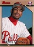

Archived


Where the heck is the New POLITICS Thread?
 by Harpua » Wed Mar 10, 2010 09:01:15
by Harpua » Wed Mar 10, 2010 09:01:15
Massa Madness continues: "Now they're saying I groped a male staffer. Yeah, I did. Not only did I grope him, I tickled him until he couldn't breathe and then four guys jumped on top of me."
-

Harpua - There's Our Old Friend

- Posts: 1916
- Joined: Thu May 07, 2009 01:13:25
 by VoxOrion » Wed Mar 10, 2010 09:11:53
by VoxOrion » Wed Mar 10, 2010 09:11:53
If possible, I'd like to get your thoughts on this comment by Roberts on the State of the Union scene from an academic standpoing (i.e. we doubtlessly know one another's opinions on Roberts, Obama, etc so there's no point in rehashing that).
From the LA Times:
What is your take on the whole protocol/appropriateness angle? Doesn't the SotU end up really becoming the "State of the Union Show" if SCOTUS isn't there? Should the branches have more respect for one another?
From the LA Times:
"To the extent the State of the Union has degenerated into a political pep rally, I'm not sure why we are there," Roberts said at the University of Alabama School of Law.
Obama's speech in January came a week after the court ruled 5-4 that corporations had a free-speech right to spend unlimited sums to elect or defeat candidates for office. The president, looking down at the six justices in attendance, sharply criticized the court for having "opened the floodgates for special interests" to sway elections.
Senate Democrats rose to their feet, applauding and cheering the president's comments.
When asked about this Tuesday, Roberts said the criticism itself did not bother him. "Anybody can criticize the Supreme Court. . . . I have no problem with that," he said. He objected to criticism in such a public setting, where the justices had no choice but to sit silently.
"The image of having the members of one branch of government standing up, literally surrounding the Supreme Court, cheering and hollering while the court — according to the requirements of protocol — has to sit there expressionless, I think is very troubling," he said.
"It does cause me to think . . . why are we there?" he added.
What is your take on the whole protocol/appropriateness angle? Doesn't the SotU end up really becoming the "State of the Union Show" if SCOTUS isn't there? Should the branches have more respect for one another?
“There are no cool kids. Just people who have good self-esteem and people who blame those people for their own bad self-esteem. “
-

VoxOrion - Site Admin
- Posts: 12963
- Joined: Thu Dec 28, 2006 09:15:33
- Location: HANLEY POTTER N TEH MAGICALASS LION
 by jeff2sf » Wed Mar 10, 2010 09:34:03
by jeff2sf » Wed Mar 10, 2010 09:34:03
dajafi wrote:I'd heard of this Marc Thiessen person before but never read him or heard him speak before seeing him on the Daily Show this evening.
"Fourth rate" is about six levels too high. As someone who disagrees with everything this vile little worm of a man espouses, I think I'm actually glad the pro-torture, anti-habeas position has such an ineffective champion.
Wow, just terrible.
- jeff2sf
- There's Our Old Friend
- Posts: 3395
- Joined: Sat Dec 30, 2006 10:40:29
 by TenuredVulture » Wed Mar 10, 2010 10:29:07
by TenuredVulture » Wed Mar 10, 2010 10:29:07
VoxOrion wrote:If possible, I'd like to get your thoughts on this comment by Roberts on the State of the Union scene from an academic standpoing (i.e. we doubtlessly know one another's opinions on Roberts, Obama, etc so there's no point in rehashing that).
From the LA Times:"To the extent the State of the Union has degenerated into a political pep rally, I'm not sure why we are there," Roberts said at the University of Alabama School of Law.
Obama's speech in January came a week after the court ruled 5-4 that corporations had a free-speech right to spend unlimited sums to elect or defeat candidates for office. The president, looking down at the six justices in attendance, sharply criticized the court for having "opened the floodgates for special interests" to sway elections.
Senate Democrats rose to their feet, applauding and cheering the president's comments.
When asked about this Tuesday, Roberts said the criticism itself did not bother him. "Anybody can criticize the Supreme Court. . . . I have no problem with that," he said. He objected to criticism in such a public setting, where the justices had no choice but to sit silently.
"The image of having the members of one branch of government standing up, literally surrounding the Supreme Court, cheering and hollering while the court — according to the requirements of protocol — has to sit there expressionless, I think is very troubling," he said.
"It does cause me to think . . . why are we there?" he added.
What is your take on the whole protocol/appropriateness angle? Doesn't the SotU end up really becoming the "State of the Union Show" if SCOTUS isn't there? Should the branches have more respect for one another?
The SOTU is the President satisfying the constitutional requirement to from time to time inform Congress of the State of the Union. Article 2 section 3 says nothing about the Supreme Court, so they need not be there.
Roberts sounds a little whiny in the above quote though. It's not just protocol, there's this crazy idea that the Court is supposed to be above partisan politics, and thus are supposed to avoid the appearance of taking sides.
There are real stakes here--if court decisions are increasingly seen as little other than partisan posturing, its authority diminishes. Maybe in the end, that's a good thing though. I'm not a big fan of the judicial branch. I think judicial review is problematic.
Be Bold!
-

TenuredVulture - You've Got to Be Kidding Me!

- Posts: 53243
- Joined: Thu Jan 04, 2007 00:16:10
- Location: Magnolia, AR
 by drsmooth » Wed Mar 10, 2010 10:38:27
by drsmooth » Wed Mar 10, 2010 10:38:27
VoxOrion wrote:What is your take on the whole protocol/appropriateness angle? Doesn't the SotU end up really becoming the "State of the Union Show" if SCOTUS isn't there? Should the branches have more respect for one another?
somewhere Madison is saying "i effin' TOLD you so..."
Respect waxes & wanes, as a reflection of the incumbents' characters. Roberts, affronted by the use of the SOTU to upbraid 'his team', addresses the matter of venue rather than the content of the criticism; Team Obama, galled by the Court's preceding actions, draws attention to the issue through the 'unseemly' airing of interbranch disagreements before the whole country; what did Shakespeare say about all the world being a stage?
Yes, but in a double utley you can put your utley on top they other guy's utley, and you're the winner. (Swish)
-

drsmooth - BSG MVP
- Posts: 47349
- Joined: Thu Dec 28, 2006 19:24:48
- Location: Low station
 by traderdave » Wed Mar 10, 2010 11:05:12
by traderdave » Wed Mar 10, 2010 11:05:12
More proof that the truth actually DOES hurt. Perhaps Roberts would have been more comfortable with a text or tweet from Obama. Overall, I was more than a little shocked that Obama attacked the SC during the SOTU; not because I think the attack was unwarranted but because it was so "in your face". Of course, Obama's purpose for the SOTU is to inform Congress of just that; the SC decision certainly affects the state of the union.
I understand, as pointed out by TV, that A2-S3 does not specifically call for the SC to participate in the SOTU. For the historians out there, has the SC's involvement always been or is that a more "modern" addition to protocol?
I understand, as pointed out by TV, that A2-S3 does not specifically call for the SC to participate in the SOTU. For the historians out there, has the SC's involvement always been or is that a more "modern" addition to protocol?
-

traderdave - Dropped Anchor

- Posts: 8451
- Joined: Thu Dec 28, 2006 18:44:01
- Location: Here
 by Bakestar » Wed Mar 10, 2010 11:54:19
by Bakestar » Wed Mar 10, 2010 11:54:19
As the judiciary becomes further politicized (both left and right), it's inevitable that they're going to get embroiled in the political morass.
Foreskin stupid
-

Bakestar - BSG MVP
- Posts: 14709
- Joined: Thu Dec 28, 2006 17:57:53
- Location: Crane Jackson's Fountain Street Theatre
 by Bakestar » Wed Mar 10, 2010 11:56:23
by Bakestar » Wed Mar 10, 2010 11:56:23
traderdave wrote:More proof that the truth actually DOES hurt. Perhaps Roberts would have been more comfortable with a text or tweet from Obama. Overall, I was more than a little shocked that Obama attacked the SC during the SOTU; not because I think the attack was unwarranted but because it was so "in your face". Of course, Obama's purpose for the SOTU is to inform Congress of just that; the SC decision certainly affects the state of the union.
I understand, as pointed out by TV, that A2-S3 does not specifically call for the SC to participate in the SOTU. For the historians out there, has the SC's involvement always been or is that a more "modern" addition to protocol?
I don't really agree with Obama for calling them out during SOTU. I think their presence at the SOTU traditionally has been a nice way of saying "Wow, Constitution is teh awesome!" Obama could have, and should have, taken the high road there.
Foreskin stupid
-
Bakestar - BSG MVP
- Posts: 14709
- Joined: Thu Dec 28, 2006 17:57:53
- Location: Crane Jackson's Fountain Street Theatre
 by drsmooth » Wed Mar 10, 2010 12:11:50
by drsmooth » Wed Mar 10, 2010 12:11:50
Bakestar wrote:
I don't really agree with Obama for calling them out during SOTU. I think their presence at the SOTU traditionally has been a nice way of saying "Wow, Constitution is teh awesome!" Obama could have, and should have, taken the high road there.
Picking on 7 guys in dresses on national teevee does give the proceedings a bit of a monty python sketch flavor
Yes, but in a double utley you can put your utley on top they other guy's utley, and you're the winner. (Swish)
-
drsmooth - BSG MVP
- Posts: 47349
- Joined: Thu Dec 28, 2006 19:24:48
- Location: Low station
 by Bakestar » Wed Mar 10, 2010 12:28:02
by Bakestar » Wed Mar 10, 2010 12:28:02
drsmooth wrote:Bakestar wrote:
I don't really agree with Obama for calling them out during SOTU. I think their presence at the SOTU traditionally has been a nice way of saying "Wow, Constitution is teh awesome!" Obama could have, and should have, taken the high road there.
Picking on 7 guys in dresses on national teevee does give the proceedings a bit of a monty python sketch flavor
Scalia has delicious cans.
Foreskin stupid
-
Bakestar - BSG MVP
- Posts: 14709
- Joined: Thu Dec 28, 2006 17:57:53
- Location: Crane Jackson's Fountain Street Theatre

 by Werthless » Wed Mar 10, 2010 12:33:41
by Werthless » Wed Mar 10, 2010 12:33:41
Bakestar wrote:
I don't really agree with Obama for calling them out during SOTU. I think their presence at the SOTU traditionally has been a nice way of saying "Wow, Constitution is teh awesome!" Obama could have, and should have, taken the high road there.
Supreme Court arguments are usually too nuanced to be captured in a 2 sentence soundbite, which is why I believe it's unfair to play that political game at the State of the Union address.
Here's what he said:
With all due deference to separation of powers, last week, the Supreme Court reversed a century of law that I believe will open the floodgates for special interests, including foreign corporations, to spend without limit in our elections.
Here's Wiki:
The Court's decision struck down a provision of the McCain-Feingold Act that banned for-profit and not-for-profit corporations and unions from broadcasting “electioneering communications” in the 30 days before a presidential primary and in the 60 days before the general elections.[2] The decision completely overruled Austin v. Michigan Chamber of Commerce (1990) and partially overruled McConnell v. Federal Election Commission (2003).[4] The decision upheld the requirements for disclaimer and disclosure by sponsors of advertisements, and the ban on direct contributions from corporations or unions to candidates.
It's not quite as simple as Obama made it sound, which is why I dislike that forum for the criticism.
-

Werthless - Space Cadet

- Posts: 12968
- Joined: Tue Apr 01, 2008 16:07:07
 by VoxOrion » Wed Mar 10, 2010 14:55:11
by VoxOrion » Wed Mar 10, 2010 14:55:11
I guess that's the thing though - if you are trying to maintain non-partisanship you are basically saying "I won't hit back". And lets face it, whether the court is partisan or not it's opponents will frame every decision as one way or the other and either attack or praise accordingly. With that in mind, it seems like a real pussy move to attack. Though I'm sure the scholars among us could confirm this one way or the other, it seems to me that whenever you get the opinion of a justice, it's via a rare interview with a big news outlet, a book of some kind, or via an academic type speech like this one. They don't seem, to my recolection, to call press conferences or stump for themselves. I mean, Alito's mouthing a response was the big scandal the next day, not the broadside.
“There are no cool kids. Just people who have good self-esteem and people who blame those people for their own bad self-esteem. “
-
VoxOrion - Site Admin
- Posts: 12963
- Joined: Thu Dec 28, 2006 09:15:33
- Location: HANLEY POTTER N TEH MAGICALASS LION
 by Bakestar » Wed Mar 10, 2010 15:19:58
by Bakestar » Wed Mar 10, 2010 15:19:58
VoxOrion wrote:I guess that's the thing though - if you are trying to maintain non-partisanship you are basically saying "I won't hit back". And lets face it, whether the court is partisan or not it's opponents will frame every decision as one way or the other and either attack or praise accordingly. With that in mind, it seems like a real sissy move to attack. Though I'm sure the scholars among us could confirm this one way or the other, it seems to me that whenever you get the opinion of a justice, it's via a rare interview with a big news outlet, a book of some kind, or via an academic type speech like this one. They don't seem, to my recolection, to call press conferences or stump for themselves. I mean, Alito's mouthing a response was the big scandal the next day, not the broadside.
American history is replete with examples of Presidents and other politicians condemning judicial decisions. ("Justice Marshall has made his decision, now let him enforce it!"; Reagan/Bush and Roe v. Wade, etc.). The main issue here is the forum. I often think we place too much emphasis on decorum when really awful shit is being done, but the SOTU is one of those ceremonial things that I wish were a little more above politics.
Lines of questioning during oral argument and the individual Justices written opinions say a lot more about their views/character than anything else, really.
The whole "problem" with the judiciary now is the terminology, and how the arguments are framed. "Activist judge" simply means "liberal." Scalia's a right-wing nut without giving any real regard to his often quite "liberal" views on Fourth Amendment jurisprudence.
I don't have a point, really, I'm just generally annoyed.
Foreskin stupid
-
Bakestar - BSG MVP
- Posts: 14709
- Joined: Thu Dec 28, 2006 17:57:53
- Location: Crane Jackson's Fountain Street Theatre
 by The Nightman Cometh » Wed Mar 10, 2010 15:29:12
by The Nightman Cometh » Wed Mar 10, 2010 15:29:12
I'm watching the unedited interview right now and my current feeling is Marc Theissen is a scum of epic proportions. He genuinely seems like a bad person.
- The Nightman Cometh
- Dropped Anchor
- Posts: 8553
- Joined: Sun Dec 27, 2009 14:35:45
 by drsmooth » Wed Mar 10, 2010 16:10:48
by drsmooth » Wed Mar 10, 2010 16:10:48
Bakestar wrote:drsmooth wrote:Bakestar wrote:
I don't really agree with Obama for calling them out during SOTU. I think their presence at the SOTU traditionally has been a nice way of saying "Wow, Constitution is teh awesome!" Obama could have, and should have, taken the high road there.
Picking on 7 guys in dresses on national teevee does give the proceedings a bit of a monty python sketch flavor
Scalia has delicious cans.
I said picking on, not hitting on...??!?
Yes, but in a double utley you can put your utley on top they other guy's utley, and you're the winner. (Swish)
-
drsmooth - BSG MVP
- Posts: 47349
- Joined: Thu Dec 28, 2006 19:24:48
- Location: Low station
 by traderdave » Wed Mar 10, 2010 16:52:01
by traderdave » Wed Mar 10, 2010 16:52:01
The Nightman Cometh wrote:I'm watching the unedited interview right now and my current feeling is Marc Theissen is a scum of epic proportions. He genuinely seems like a bad person.
I'll have to wait until I get home to invest the 11+ mins to watch/listen but, judging by the quotes from Huff Post, I have a feeling I am going to be really pissed off after I see it.
-
traderdave - Dropped Anchor
- Posts: 8451
- Joined: Thu Dec 28, 2006 18:44:01
- Location: Here
 by Gomes » Wed Mar 10, 2010 17:21:52
by Gomes » Wed Mar 10, 2010 17:21:52
traderdave wrote:The Nightman Cometh wrote:I'm watching the unedited interview right now and my current feeling is Marc Theissen is a scum of epic proportions. He genuinely seems like a bad person.
I'll have to wait until I get home to invest the 11+ mins to watch/listen but, judging by the quotes from Huff Post, I have a feeling I am going to be really pissed off after I see it.
This interview was enraging, especially as an attorney, to hear this guy talk.
-

Gomes - There's Our Old Friend
- Posts: 548
- Joined: Fri Apr 03, 2009 10:34:42
- Location: West Chester, PA